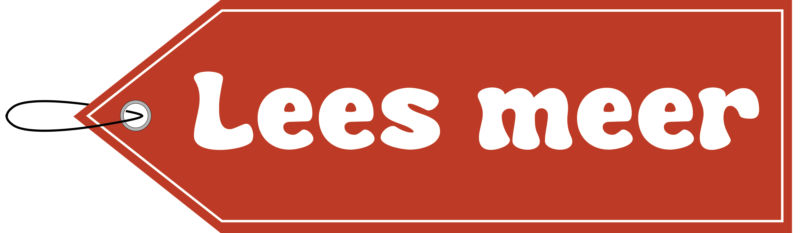

Back to vintage
Welkom op mijn website! Ik ben Bibi Unger, 19 jaar en studeer Communicatie en Multimediadesign aan de Hogeschool van Amsterdam. Op deze website vind je informatie over vintage, vintage winkels (waaronder Marbles Vintage) en waarom die goed zijn voor het milieu.
Marbles Vintage
Marbles vintage zijn vintagewinkels. Er zijn drie winkels, die zich alle 3 in Amsterdam bevinden. Er worden hier vooral vintage kleding verkocht. Dit is kleding die al eerder gemaakt en gedragen is, meestal uit een totaal andere periode.
Kleding&milieu
De kledingindustrie is enorm vervuilend en schadelijk voor het milieu. Door de productie en consumptie van Fast Fashion komt er allerlei c02 uitstoot vrij, wordt er enorm veel water verspild en worden mensenrechten in andere landen geschaden. Tweedehands kleding kopen is de veel meer duurzame en ethische optie.